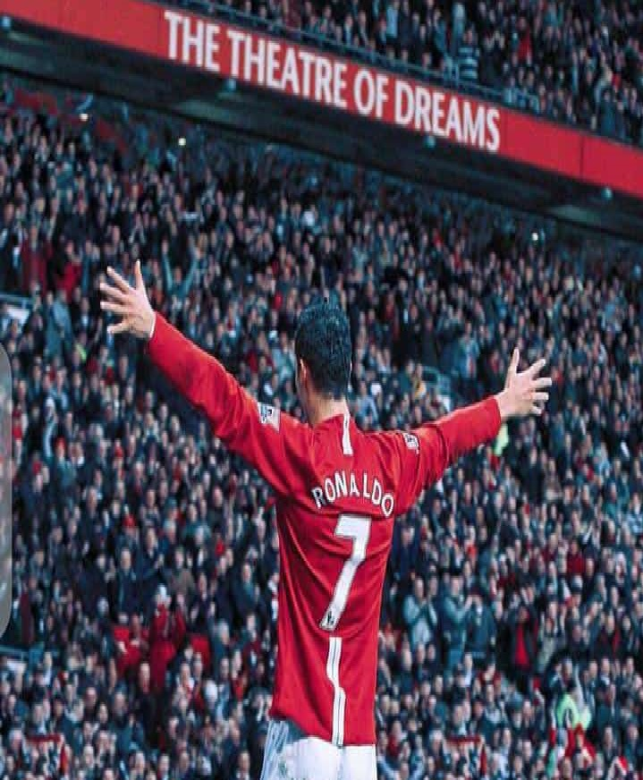

17th june 2022Messi to move to psg to continue his career18th june 2022Arsenal to bid for puyol next season19th june 2022Everton to host the next champion league in their new stadium20th june 2022manchester city qualifies for semi-final, to play against Chelsea21st june 2022Real Madrid to play against PSG22nd june 2022england to host europa league23rdth june 2022Messi buys the lastest E-series benz worth $500 million 24th june 2022benzima to move to wolves after serveral challenges25th june 2022chelsea build the largest stadium in england26th june 2022Manchester united have the biggest super-market in england

just-Inronaldo to get $5 Million as weekly allowance in barcelonia
Ronaldo is from portugal who has played several matches for his country
and has make a great impact in his football career. he started from feeder team in manchester united where
he grow into the senior team under the leadership of alex ferguson. alex ferguson has develop ronaldo up to the
level where all football club in england wanted to buy ronaldo.
there is an adage that says nothing is permanent, manchester united faced serious financial challenges
making them sell their players to met up their financial stability.
Newspremier league has faced serious setback due to the fact that football clubs find to difficult cop with high cost of formsNewspremier league committee to banned some football clubs in the next seasonNewsfootball club players to sue premier league for non-payment allowanceNewsengland to make new policies for football clubsNewsspain to sue barcelonia for violenting government policiesNewspremier league to expand humanitarian exercise to beyond englandNewspremier league to face FIFA committeeNewsMessi to move to premier league clubsNewsronaldo to face premier league committee